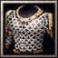

裝甲+3
有20%的機會閃避攻擊
每0.5秒對附近200範圍的敵人造成30點熾炎焚身傷害
移動速度+80
| 物品名稱 | 圖片 | 價格 | 說明 | |
| 褶裙(Ｑ) | 480 | 移動速度+80 | ||
| 陣羽織(Ｗ) | 500 | 裝甲+3 | ||
| 兜(Ｅ) | 1000 | 裝甲+5 | ||
| 短甲(Ｒ) | |
1300 | 裝甲+7 | |
| 鎧直垂(Ａ) | 1300 | 攻擊速度+50% | ||
| 掛甲(Ｓ) | 1600 | 裝甲+3 |
||
| 大鎧(Ｄ) |  | 1600 | 裝甲+8 | |
| 鱗片甲(Ｆ) | 1750 | 裝甲+5 每0.5秒對附近200範圍的敵人造成30點熾炎焚身傷害 |
||
| 胴丸(Ｚ) | 2000 | 裝甲+10 | ||
| 籠手(Ｘ) | 400 | 攻擊速度+20% | ||
| 臑當(Ｃ) | 1085 | 裝甲+3 移動速度+80 |